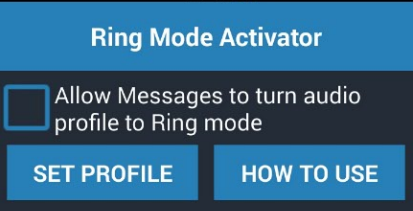

This app is used to change the audio profile of your phone simply by getting Text message. If your phone is in silent mode and has lost somewhere in your home, and you are in hurry and trying to find it but it is not found. you are calling also on your phone but it is in silent mode, then this app will benefit to turn your phone's audio profile from silent mode to either normal or vibrate mode or vice versa by sending a text message to your phone. You need to type either 'Ring' or 'Normal' ignoring character case to turn silent mode to normal mode or 'vibrate' to turn it in vibrate mode. You can turn it into silent mode by sending a message 'silent'.
To enable application to turn audio profile on getting message, please keep check box always ticked.
To disable application, please keep check box always unticked.
